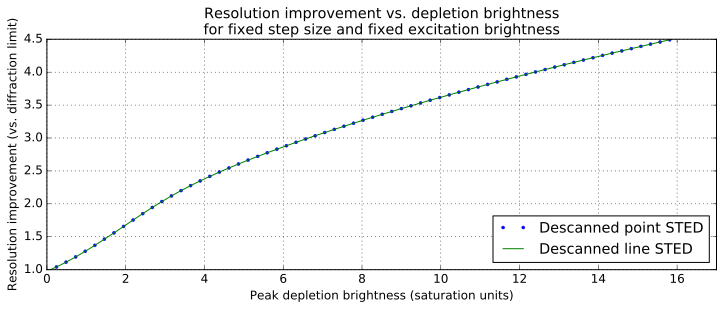
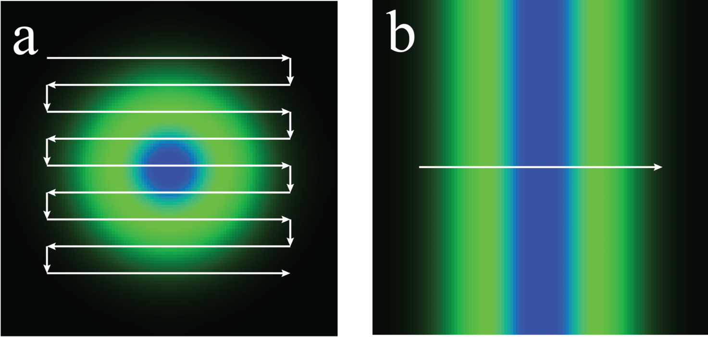
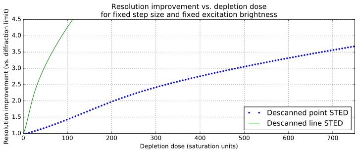
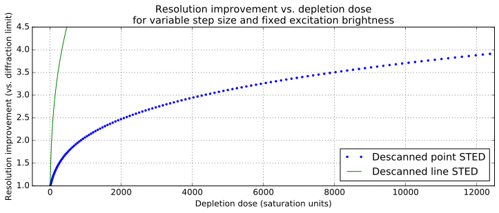
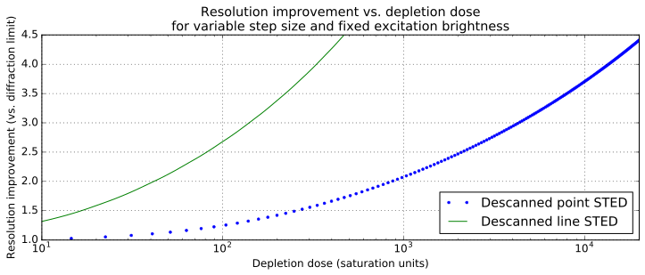
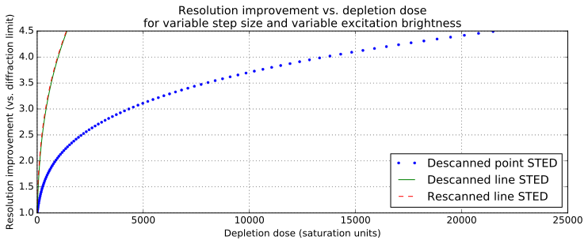
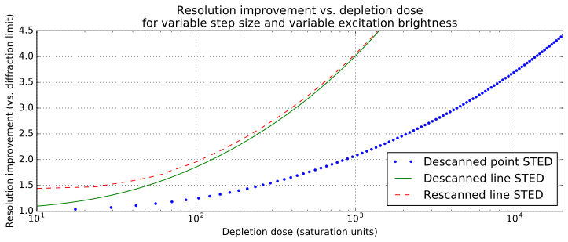
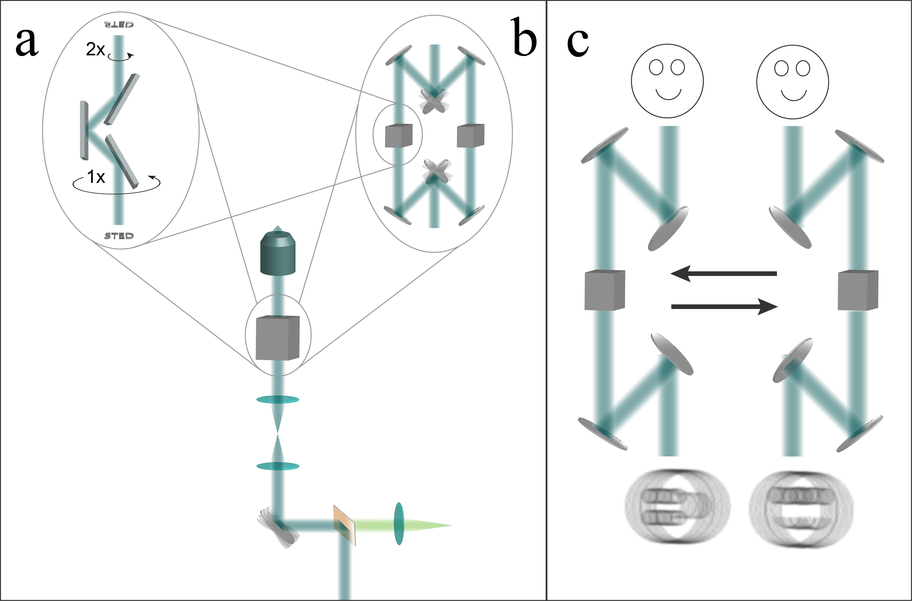
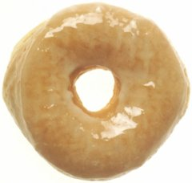

This project is maintained by AndrewGYork
Simulations in this article assume the following:
A correctly tuned STED microscope doesn't have as many degrees of freedom as Figure 1 suggests. If multiple combinations of Excitation, Depletion, Scan density and Exposure time give the same image quality (meaning, the same resolution and emissions per molecule), the combination which gives the lowest photodose is the correct choice. There are many ways to choose poorly. For example:
Compare Excitation: 0.25, Exposure time: 4 vs. Excitation:1, Exposure time 1, which give similar emissions per molecule, but very different depletion doses.
Compare Excitation: 1, Exposure time: 2 vs. Excitation 4, Exposure time: 1, which give similar emissions per molecule, but very different excitation doses.
Compare Depletion: 3, Scan density: 6 vs. Depletion: 3, Scan density: 12, which give the same PSF-limited resolution, but very different depletion doses.
Compare Depletion: 3, Scan density: 6 vs. Depletion: 27, Scan density: 6, which give the same Nyquist-limited resolution, but very different depletion doses and emissions per molecule.
Exposure time and Excitation aren't really independent choices, they're primarily determined by the desired emissions per molecule. There's room for a little tuning: for a given resolution and emission level, saturated excitation and short exposure times minimize depletion dose, while unsaturated excitation and long exposure times minimize excitation dose. Depending on how tolerant the sample is of excitation vs. depletion light, you might want to bias one way or the other. Scan density and Depletion aren't independent choices at all; they're both determined by the desired resolution improvement \(R\), and there's zero incentive to change one without changing the other to match.
How should we compare two techniques to decide which is gentler? One reasonable definition is that a gentler technique requires less photodose to achieve the same image quality. Equivalently, a gentler technique gives higher image quality for the same photodose, which is the definition I use for comparisons in Figure 2. Of course, we must define what we mean by photodose and image quality if we want to make meaningful, quantitative comparisons.
One reasonable metric of photodose is cumulative excitation fluence and depletion fluence delivered to each sample position during imaging (per-pulse fluence, summed over the scan positions, multiplied by the number of pulses per scan position, which is approximately uniform over the field of view except near the edges). This two-parameter metric makes it difficult to define useful "greater than, less than" comparisons; is an excitation dose of 5 and a depletion dose of 500 meaningfully gentler than an excitation dose of 50 and a depletion dose of zero?
In Figure 2, I want to avoid any ambiguities while comparing point STED vs. line STED, so I always compare the two techniques at equal excitation dose, and equal depletion dose. If the two techniques are given the same "damage budget", which one gives us higher image quality? Of course, sample damage due to STED photodose will depend sensitively on the implementation of the STED device and the nature of the sample, and the tolerance for excitation fluence vs. depletion fluence will certainly vary from sample to sample. Nonetheless, two techniques which deliver the same photodose with the same excitation and depletion colors, similar pulse durations, and similar peak pulse fluence will likely cause similar photodamage.
If "photodose" is tricky to define and compare quantitatively, "image quality" is nearly impossible; there's an effectively infinite variety of ways an image can be wrong or misleading. In this article's simulations, I know the true object, so I can use my preferred metric of image quality: a plot of reconstruction error vs. spatial frequency. More precisely, I Fourier transform the difference between the true object and the reconstructed object, and display the Fourier amplitudes as an image, using a logarithmic intensity scale. A bigger, blacker central region means a better reconstruction. Why do I prefer this metric?
If you interpret a microscope image as an answer to the question "where are the fluorophores?", you're simultaneously asking three questions:
Getting low spatial frequencies wrong is unacceptable. A microscope image is a noisy low-pass filtered version of the sample's fluorophore density. This is typically an excellent estimate of low spatial frequencies, and deconvolution can reduce systematic errors due to the filtering.
Getting high spatial frequencies wrong is guaranteed; there is always some frequency above which effectively nothing is known. The only appropriate answer is "I don't know". Note that "zero" is often used as a substitute for "I don't know", but is absolutely not the same thing.
To interpret an image, we must judge which spatial frequencies are known (low), and which are unknown (high). Which spatial frequencies survive the measurement (low-pass filtering) are primarily determined by the PSF(s) of the microscope (the filter), and the spatial frequency amplitudes of the sample (the input to the filter). The constraint that the sample is non-negative sometimes allows us to infer spatial frequencies which are not directly measured, especially for samples with large regions of nearly-zero density.
Asking multiple questions at once is a good way to get a bad answer, especially when the questions aren't equally difficult. Suppose I asked you the average of today's temperature, and the temperature a million years into the future. How should you answer? The best answer is probably not a number, and it's certainly not to assume that the future temperature is zero. Perhaps the best answer would be, "I don't know, and that's a dumb question; you should ask me about those quantities separately."
Real-space metrics of image quality (for example, mean-squared error) typically ask exactly this type of mixed multiple question, asking for known low frequencies and unknown high frequencies simultaneously, and penalizing guaranteed-to-be-wrong answers about high spatial frequencies. Low-pass filtered real-space metrics of image quality are more defensible, but the optimal choice of low-pass filter depends on the object being imaged.
A plot of reconstruction error vs. spatial frequency cleanly avoids such problems; the transition in Figure 2(d, e) is obvious, and known quantities are characterized separately from unknown quantities. Image quality via this metric (or any other) is certainly subjective and certainly not well-ordered. However, if one imaging method produces a larger region of known frequencies compared to another method, and error is strictly lower in this region, than we can conclude the lower-error method's image quality is strictly better. In conclusion: if line STED gives a larger region of lower Fourier error compared to point STED, for the same cumulative excitation and depletion fluence, then line STED is gentler than point STED. As my simulations in Figure 2 show, it does, for the entire range of resolution improvements I've checked.
A typical, reasonable reaction to the (admittedly complex) comparison in Figure 2 is "Why are you making this so complicated? Why not do a simple comparison, just plot [X] vs. [Y]", where X and Y are typically quantities like excitation brightness, depletion brightness, excitation dose, depletion dose, resolution improvement, etc. I've assembled a gallery of such comparisons below (generated by line_sted_figure_a1.py in the rescan_line_sted Github respository), and I describe why each of them is a bad or misleading comparison. The punch line: the comparison in Figure 2 is complicated because the underlying concepts are complicated; a good comparison should be as simple as possible, but not simpler.
Starting with the simplest possible comparison, a plot of PSF-limited resolution improvement \(R\) vs. peak depletion brightness for point and line STED:
One might be tempted to conclude that point and line STED were equally gentle, since they give the same \(R\) for the same peak depletion brightness. This is misleading, because point-STED and line-STED use very different scan patterns; the 2D raster scan of point-STED hits each molecule of the sample many times more (a) than the 1D line scan of line-STED (b):
This, in turn, yields a very different dose. Since dose, rather than peak brightness, typically determines photodamage, perhaps we should plot \(R\) vs. depletion dose:
This comparison is highly suggestive; line-STED seems to be much gentler than point-STED. Unfortunately the comparison is still flawed. We have varied depletion brightness, but not scan density, so we are not satisfying the Nyquist condition. Although our PSF has shrunk, our resolution remains Nyquist-limited, and doesn't actually improve.
To compare more meaningfully, we must increase our scan density as we increase our depletion brightness, in order to maintain a constant number of samples per STED PSF:
Now line-STED seems much gentler than point-STED! (In fact, a plot like this was my first inspiration to pursue this project.) The difference between the two methods is now so large it's difficult to compare them on a linear scale. The same data, as a semilog plot:
Unfortunately the comparison is still flawed. Increasing both depletion brightness and scan density improves resolution, but greatly decreases the emitted signal per molecule (you can explore this tradeoff via Figure 1). In practice, one always increases excitation brightness as one increases depletion brightness, to maintain a usable SNR.
It's an interesting question how much we should increase excitation brightness as we increase depletion brightness. For the sake of simplicity, let's suppose we want to keep the expected number of emission per molecule constant. Plotted on a linear scale, this yields:
The same data, plotted on a semilog scale:
Note that in addition to descanned point-STED and descanned line-STED, we've added a line for rescanned [York 2013, Roth 2013, De Luca 2013] line-STED, which further improves \(R\), especially at low depletion dose. Rescan line-STED gives the same \(R\) as point-STED using (roughly) an order of magnitude less depletion dose, across a wide range of \(R\). Have we finally achieved a fair comparison?
What about the number of scan orientations required for line-STED? As we see from Figure 2g, the number of orientations to maintain image quality scales roughly like \(R\). Superficially, it seems we have to multiply the line-STED dose by the number of orientations, which would presumably eliminate most of the gentleness advantage of line-STED. Fortunately this is not the case; you can split the same number of excitation/depletion pulse pairs across as many scan orientations as you'd like, while delivering the same total dose. (Remember that we're holding expected emissions per molecule constant in our comparison). As long as the number of excitation/depletion pulse pairs per scan position is larger than the number of scan orientations (which it always is in Figure 2, and in practice), excitation/depletion dose is independent of the number of scan orientations.
We've almost achieved a fair comparison; the remaining problem is that we'd like to compare image quality vs. photodose, but our plots here only compare \(R\) vs. depletion dose. As discussed above, image quality is inherently a multidimensional quantity that can't be boiled down to a single number, which brings us to the comparison presented in Figure 2 (which also considers excitation dose, which I glossed over here).
That's why Figure 2 is so complicated.
As discussed above, a correctly tuned STED microscope doesn't have as many degrees of freedom as Figure 1 suggests. In Figure 2, rather than choose Excitation, Depletion, Scan Density, and Exposure time independently, I instead choose a desired resolution improvement and signal level for descan point-STED, and my code solves for the inputs which will give this output. To avoid excessive excitation dose or depletion dose, I minimize Exposure time subject to the constraint that Excitation < 0.25.
After parameters are chosen for point-STED, I choose resolution improvement and signal level for descan and rescan line-STED that will give the same excitation and depletion dose as point-STED, and my code solves for the inputs which will give this output, subject to the same minimization of Exposure time and constraint that Excitation < 0.25. For each comparison, I choose the number of line-STED orientations to give strictly better image quality than point-STED; this number increases with increased resolution.
Note that we could use fewer orientations to increase acquisition speed at the expense of "strictly better" image quality (some directions would have worse resolution than point STED, some would have better). In my experience, many real-life imaging challenges tolerate substantial resolution anisotropy. Here, my goal is the cleanest comparison of gentleness between point-STED and line-STED, so I stick to comparisons which are well-ordered.
The table below summarizes the resulting parameters used in Figure 2. The punchline: anything point-STED can do, line-STED can do better.
| Excitation dose | Depletion dose | Method | Peak R | Emissions | Orientations |
|---|---|---|---|---|---|
| 5.8 | 0.0 | Descan point | 1.00x | 4.00 | |
| Descan line | 1.00x | 4.00 | 1 | ||
| Rescan line | 1.38x | 4.00 | 2 | ||
| 11.4 | 500.3 | Descan point | 1.50x | 4.00 | |
| Descan line | 2.68x | 2.83 | 3 | ||
| Rescan line | 2.95x | 2.62 | |||
| 18.8 | 1696.8 | Descan point | 2.00x | 4.00 | |
| Descan line | 4.04x | 3.01 | 4 | ||
| Rescan line | 4.08x | 3.02 | |||
| 30.3 | 4159.5 | Descan point | 2.50x | 4.00 | |
| Descan line | 5.13x | 3.79 | 6 | ||
| Rescan line | 5.15x | 3.80 | |||
| 46.7 | 8601.8 | Descan point | 3.00x | 4.00 | |
| Descan line | 5.95x | 5.03 | 8 | ||
| Rescan line | 5.96x | 5.04 | |||
| 90.7 | 27044.0 | Descan point | 4.00x | 4.00 | |
| Descan line | 7.84x | 7.37 | 10 | ||
| Rescan line | 7.84x | 7.37 |
An ideal array detector would report the precise location and arrival time of each photoelectron, and nothing else. The best existing array detectors bin photoelectrons in space (pixels) and time (frames), currently yielding on the order of \(10^9\) bins per second with additive "read noise" of \(\sim 1\) \(e^-\) per bin, and substantial "dead time" between frames.
For a concrete example, my preferred camera is the pco.edge 4.2 (a member of the Fairchild sCMOS family that also includes the Hamamatsu Orca Flash 4, the Andor Zyla, and the Photometrics Prime):
Dead time dominates for short exposure times and/or large fields of view. Since the entire motivation for multipoint STED is fast imaging of large fields of view, we expect dead time to be the dominant speed limit, which is why Figure 3 displays "camera exposures" in addition to "scan positions" for every Imaging method: except Descan point.
An imaging method that sums multiple camera pixels to form a single logical pixel suffers in several ways:
A microscope is only as fast as its slowest component. Both descanned line-STED and rescanned line-STED must acquire multiple images in different scan directions to yield high-quality images. If we want to preserve line-STED's speed advantage over point or multipoint STED, we must switch scan directions as rapidly as possible.

Panel (a) of the image above shows a "k-mirror", an elegant method to rotate the scanning direction, used by previous line-scanning microscopes [Schubert 2013]. Similar to a dove prism but aberration-free, mechanical rotation of the k-mirror about its axis rotates the image that it transmits. Unfortunately this mechanical rotation is typically quite slow.
Panel (b) of the image above illustrates a faster way to change scan directions, an "optical switchyard". An input beam travels either the right or the left path, with a pair of galvanometric or MEMS mirrors allowing sub-millisecond switching [Milanović 2004] between the two paths. In each path is an image-rotating element (such as a k-mirror). Two line-scan directions could be taken back-to-back with submillisecond delay as shown in panel (c); for more scan directions, one k-mirror could rotate while the other is in use, or the switchyard could have additional arms. I’ve illustrated this setup with seven reflections in each path for conceptual simplicity, but an optimized version could reduce the number of mirrors.
The table below summarizes the results displayed in Figure 3. The punchline: rescan line-STED uses far fewer scan positions than point-STED, and far fewer camera exposures than multipoint-STED and descanned line-STED.
| R | FOV | Method | Scan positions | Camera exposures |
|---|---|---|---|---|
| 1.00 | 1x1 | Descan point | 484 | |
| Multipoint | 36 | 36 (full-chip) | ||
| Descan line | 22 | 22 (cropped) | (per orientation) | |
| Rescan line | 1 (full-chip) | |||
| 2x2 | Descan point | 1849 | ||
| Multipoint | 36 | 36 (full-chip) | ||
| Descan line | 43 | 43 (cropped) | (per orientation) | |
| Rescan line | 1 (full-chip) | |||
| 2.00 | 1x1 | Descan point | 1849 | |
| Multipoint | 144 | 144 (full-chip) | ||
| Descan line | 43 | 43 (cropped) | (per orientation) | |
| Rescan line | 1 (full-chip) | |||
| 2x2 | Descan point | 7396 | ||
| Multipoint | 144 | 144 (full-chip) | ||
| Descan line | 86 | 86 (cropped) | (per orientation) | |
| Rescan line | 1 (full-chip) | |||
| 3.00 | 1x1 | Descan point | 4225 | |
| Multipoint | 324 | 324 (full-chip) | ||
| Descan line | 65 | 65 (cropped) | (per orientation) | |
| Rescan line | 1 (full-chip) | |||
| 2x2 | Descan point | 16641 | ||
| Multipoint | 324 | 324 (full-chip) | ||
| Descan line | 131 | 131 (cropped) | (per orientation) | |
| Rescan line | 1 (full-chip) |
Several times in the article, I describe shapes by reference to pastries. In case international readers aren't familiar with the foods I'm referring to, this is what I mean when I say "doughnut":

...and this is what I mean when I say "eclair":
line_sted_figure_1.py, line_sted_figure_2.py, line_sted_figure_3.py
The data for Figures 1, 2, and 3 are created by running the corresponding Python 3 modules line_sted_figure_1.py, line_sted_figure_2.py, and line_sted_figure_3.py. You can view these modules in the rescan_line_sted Github respository. If you want to run/modify this code yourself, you'll need a Python 3 environment, and also the Python subpackages Numpy, Scipy, and Matplotlib. Anaconda satisfies these requirements with a single installation; if you're new to Python, this is the approach I recommend. Make sure to get the Python 3 version of Anaconda; Python 2 and 3 are (slightly) different languages, and my code is written in Python 3.
Once you've set up an appropriate Python 3 environment (including Numpy, Scipy, and Matplotlib), download and unzip the rescan_line_sted repository, navigate to the figure_generation directory, and execute the three figure generation scripts. They take quite a while to run (especially line_sted_figure_3.py), print a lot of gibberish to the console, and they generate a lot of output files (>10,000 files, >4 GB). Their output will be placed in a directory called big_images, which will be two levels up from the figure_generation directory (the same level as the master directory you unzipped).
Most of this output is in .svg format, which Matplotlib generates directly. Some of the output is in .gif or .mp4 format, which Matplotlib doesn't generate directly, so I generate .svg from Matplotlib and then my Python code calls ImageMagick and ffmpeg to convert to .gif and .mp4, respectively. If you want to do these conversions yourself, you'll have to install ImageMagick and ffmpeg, and you might have to modify the parts of my Python script that call ImageMagick and ffmpeg, if they're called differently on your OS than on mine. Email me if this is both challenging and important to you.
Note that my figure generation code is mostly concerned with formatting the figures; you don't have to understand this code to understand my calculations. If you want to understand the calculations which the paper is based on, I recommend focusing on line_sted_tools.py, described below.
line_sted_tools.py
The line_sted_tools.py module defines the functions used to produce the data for Figures 1 and 2. You can view the full module in the rescan_line_sted Github respository. For simplicity and readability, I've included simplified annotated versions of the most important functions here.
psf_report()def psf_report(
psf_type, #Point or line
excitation_brightness, #Peak brightness in saturation units
depletion_brightness, #Peak brightness in saturation units
steps_per_excitation_psf_width, #Too small? Bad res. Too big? Excess dose.
pulses_per_position): #Think of this as "dwell time"
The primary function of this module. See the start of this Appendix for a lengthy list of assumptions made by this simulation, and a description of the units used. Briefly, psf_report() takes inputs that correspond to the controls of Figure 1, and returns the data used to generate Figure 1.
psfs = generate_psfs(excitation_brightness, depletion_brightness, psf_type)
We start with a call to generate_psfs() to calculate excitation and STED PSFs, which we'll use to plot Figure 1(a, b, c).
central_line_st = psfs['sted'][0, num_steps//2, :]
central_line_rescan = psfs['rescan_sted'][0, num_steps//2, :]
sted_sigma = get_width(central_line_st)
rescan_sigma = get_width(central_line_rescan)
resolution_improvement_factor_descanned = blur_sigma / sted_sigma
resolution_improvement_factor_rescanned = blur_sigma / rescan_sigma
We calculate the widths of these PSFs via Gaussian fits to calculate the resolution improvement shown in Figure 1(e).
if psf_type == 'point': #2D scan, sum an area
excitation_dose = pulses_per_position * psfs['excitation'].sum()
depletion_dose = pulses_per_position * psfs['depletion'].sum()
expected_emissions = pulses_per_position * psfs['sted'].sum()
elif psf_type == 'line': #1D scan, sum a line
excitation_dose = pulses_per_position * psfs['excitation'][0, num_steps//2, :].sum()
depletion_dose = pulses_per_position * psfs['depletion'][0, num_steps//2, :].sum()
expected_emissions = pulses_per_position * psfs['sted'][0, num_steps//2, :].sum()
We also calculate emission levels and dose per pulse for Figure 1(d, e) from the excitation and depletion PSFs. Note that the scan pattern is very important when calculating the illumination dose! Point-STED requires a 2D raster, compared to line-STED which only needs a 1D scan. This leads to a huge difference in dose, and a small difference in emission levels.
generate_psfs()def generate_psfs(
excitation_brightness, #Peak brightness in saturation units
depletion_brightness, #Peak brightness in saturation units
psf_type='point'): #Point or line
The real workhorse of the module, a utility function used by psf_report().
excitation_psf_point = np.zeros(shape)
excitation_psf_point[0, shape[1]//2, shape[2]//2] = 1
excitation_psf_point = gaussian_filter(excitation_psf_point, sigma=blur_sigma)
excitation_psf_point *= excitation_brightness / excitation_psf_point.max()
We start with an array of zeros, set the central pixel to one, and apply a Gaussian blur to calculate a point illumination pattern (Figure 1a, blue); similar code (not shown here) calculates a Gaussian line pattern by blurring a single-pixel line. Pixel values encode fluence per pulse, in saturation units, and the pixel size encodes the scan step size (always one pixel per step).
depletion_psf_inner = np.zeros(shape)
depletion_psf_inner[0, shape[1]//2, shape[2]//2] = 1
depletion_psf_inner = gaussian_filter(depletion_psf_inner, sigma=blur_sigma)
depletion_psf_outer = gaussian_filter(depletion_psf_inner, sigma=blur_sigma)
depletion_psf_point = ((depletion_psf_outer / depletion_psf_outer.max()) -
(depletion_psf_inner / depletion_psf_inner.max()))
depletion_psf_point *= depletion_brightness / depletion_psf_point.max()
We calculate a point depletion pattern (Figure 1a, green) as the difference of two gaussian blurs of points; similar code (not shown) calculates a line depletion pattern. As before, pixel values encode fluence per pulse, in saturation units.
saturated_excitation_psf_point = 1 - 2**(-excitation_psf_point)
saturated_depletion_psf_point = 2**(-depletion_psf_point)
sted_psf_point = saturated_excitation_psf_point * saturated_depletion_psf_point
We use these fluences to calculate point-illumination transition probabilities; similar code calculates line-illumination probabilities. Pixel values encode probability per pulse that a ground-state molecule will become excited (Figure 1b, dotted blue), probability per pulse that an excited molecule will be depleted (Figure 1b, green), or probability per pulse that a molecule will become excited, but not be depleted (Figure 1b, solid blue).
if psf_type == 'point':
descanned_point_sted_psf = sted_psf_point # Simple rename
Next we calculate the "system" PSF, which can depend on both excitation and emission. For descanned point-STED, the system PSF is the (STED-shrunk) excitation PSF. For rescanned line-STED, the system PSF also involves the emission PSF:
elif psf_type == 'line':
line_rescan_ratio = int(np.round((emission_sigma / line_sted_sigma)**2 + 1)
point_obj = np.zeros(shape)
point_obj[0, point_obj.shape[1]//2, point_obj.shape[2]//2] = 1
emission_psf = gaussian_filter(point_obj, sigma=emission_sigma)
rescanned_signal_inst = np.zeros((
point_obj.shape[0],
point_obj.shape[1],
int(line_rescan_ratio * point_obj.shape[2])))
rescanned_signal_cumu = rescanned_signal_inst.copy()
descanned_signal_cumu = np.zeros(shape)
I could use an analytical shortcut to calculate the rescan PSF (see [De Luca 2013] for details), but for the sake of clarity, I explicitly simulate the rescan imaging process of a pointlike object:
for scan_position in range(point_obj.shape[2]):
# . Scan the excitation
scanned_excitation = np.roll(
sted_psf_line, scan_position - point_obj.shape[2]//2, axis=2)
# . Multiply the object by excitation to calculate the "glow":
glow = point_obj * scanned_excitation
# . Blur the glow by the emission PSF to calculate the image
# on the detector:
blurred_glow = gaussian_filter(glow, sigma=emission_sigma)
# . Calculate the contribution to the descanned image (the
# kind measured by Curdt or Schubert)
descanned_signal = np.roll(
blurred_glow, point_obj.shape[2]//2 - scan_position, axis=2)
descanned_signal_cumu[:, :, scan_position
] += descanned_signal.sum(axis=2)
# . Roll the descanned image to the rescan position, to
# produce the "instantaneous" rescanned image:
rescanned_signal_inst.fill(0)
rescanned_signal_inst[0, :, :point_obj.shape[2]] = descanned_signal
rescanned_signal_inst = np.roll(
rescanned_signal_inst,
scan_position * line_rescan_ratio - point_obj.shape[2]//2,
axis=2)
# . Add the "instantaneous" image to the "cumulative" image.
rescanned_signal_cumu += rescanned_signal_inst
if verbose: print(" ...done.")
# . Bin the rescanned psf back to the same dimensions as the object:
rescanned_line_sted_psf = np.roll(
rescanned_signal_cumu, #Roll so center bin is centered on the image
int(line_rescan_ratio // 2),
axis=2).reshape( #Quick and dirty binning
1,
rescanned_signal_cumu.shape[1],
int(rescanned_signal_cumu.shape[2] / line_rescan_ratio),
int(line_rescan_ratio)
).sum(axis=3)
descanned_line_sted_psf = descanned_signal_cumu # Simple rename
For a graphical illustration of this simulation process, see the animations in Figure 3 with Imaging method: Rescan line.
tune_psf()def tune_psf(
psf_type, #'point' or 'line'
scan_type, #'descanned' or 'rescanned'
desired_resolution_improvement,
desired_emissions_per_molecule,
max_excitation_brightness=0.5, #Saturation units
steps_per_improved_psf_width=3):
A function which finds the combination of excitation brightness, depletion brightness, and number of pulses to give the desired resolution improvement and emissions per molecule, without exceeding a limit on excitation brightness.
psf_report() lets us specify illumination intensities and scan step sizes, and calculates resolution, emission, and dose. That's conceptually great; these are the parameters we'd hand-tune when using a STED microscope, as shown in Figure 1.
Unfortunately, psf_report() also lets us make all kinds of bad choices, as described above. For example, unless the step size matches the resolution improvement, there's tons of excess dose for no benefit. For another example, you can always get more emission by increasing the excitation intensity, but due to saturation, this is a terrible approach.
tune_psf() lets us specify our goals (resolution improvement, emitted signal), and figures out the inputs needed to get there efficiently. Note that this function is not fast or memory-efficient, but that suits my needs, it just has to generate a few figures.
steps_per_excitation_psf_width = (steps_per_improved_psf_width *
desired_resolution_improvement)
args = { #The inputs to psf_report()
'psf_type': psf_type,
'excitation_brightness': max_excitation_brightness,
'depletion_brightness': 1,
'steps_per_excitation_psf_width': steps_per_excitation_psf_width,
'pulses_per_position': 1,
'verbose': False,
'output_dir': None}
num_iterations = 0
while True:
num_iterations += 1
# Tune the depletion brightness to get the desired resolution
# improvement:
def minimize_me(depletion_brightness):
args['depletion_brightness'] = abs(depletion_brightness)
results = psf_report(**args)
return (results['resolution_improvement_' + scan_type] -
desired_resolution_improvement)**2
args['depletion_brightness'] = abs(minimize_scalar(minimize_me).x)
# How many excitation/depletion pulse pairs do we need to
# achieve the desired emission?
args['excitation_brightness'] = max_excitation_brightness
args['pulses_per_position'] = 1
results = psf_report(**args) # Calculate emission from one pulse
args['pulses_per_position'] = np.ceil((desired_emissions_per_molecule /
results['expected_emission']))
# Tune the excitation brightness to get the desired emissions
# per molecule:
def minimize_me(excitation_brightness):
args['excitation_brightness'] = abs(excitation_brightness)
results = psf_report(**args)
return (results['expected_emission'] -
desired_emissions_per_molecule)**2
args['excitation_brightness'] = abs(minimize_scalar(minimize_me).x)
results = psf_report(**args)
## We already tuned the depletion brightness to get the desired
## resolution, but then we changed the excitation brightness,
## which can slightly affect resolution due to excitation
## saturation. Check to make sure we're still close enough to
## the desired resolution; if not, take it from the top.
relative_resolution_error = (
(results['resolution_improvement_' + scan_type] -
desired_resolution_improvement) /
desired_resolution_improvement)
if (relative_resolution_error < relative_error):
break
results.update(args) #Combine the two dictionaries
return results
The workhorse of the optimization loop is scipy.optimize.minimize_scalar(), which alternates between tuning the depletion brightness to control resolution and tuning excitation brightness to control signal. Since depletion brightness also affects signal, and tuning excitation brightness (weakly) affects resolution, we alternate tuning until our result is sufficiently close to our goal.
Deconvolver()A relatively simple class, which implements Richardson-Lucy deconvolution for Figure 2. Since line-STED acquires images from multiple scan directions, and each image has highly anisotropic resolution, we need deconvolution to fuse these images into a single reconstruction [Ingaramo 2014].
Also, as discussed above, deconvolution is neccesary to compare how accurately point-STED and line-STED measure the low spatial frequencies of the test object, since every non-DC spatial frequency is systematically underestimated by the measurement process.
class Deconvolver:
def __init__(self, psfs, output_prefix=None, verbose=True):
"""
'psfs' is a list of numpy arrays, one for each PSF.
'output_prefix' specifies where the deconvolver object will save files.
"""
self.psfs = list(psfs)
if output_prefix is None:
output_prefix = os.getcwd()
if not os.path.exists(os.path.dirname(output_prefix)):
os.mkdir(os.path.dirname(output_prefix))
self.output_prefix = output_prefix
self.verbose = verbose
self.num_iterations = 0
self.saved_iterations = []
self.estimate_history = []
return None
def create_data_from_object(
self,
obj,
total_brightness=None,
random_seed=None
):
assert len(obj.shape) == 3
assert obj.dtype == np.float64
self.true_object = obj.copy()
if total_brightness is not None:
self.true_object *= total_brightness / self.true_object.sum()
self.noiseless_measurement = self.H(self.true_object)
if random_seed is not None:
np.random.seed(random_seed)
self.noisy_measurement = [np.random.poisson(m) + 1e-9 #No ints, no zeros
for m in self.noiseless_measurement]
return None
def load_data_from_tif(self, filename):
self.noisy_measurement = np_tif.tif_to_array(filename) + 1e-9
assert self.noisy_measurement.shape == 3
assert self.noisy_measurement.min() >= 0
return None
def iterate(self):
if self.num_iterations == 0:
self.estimate = np.ones_like(self.H_t(self.noisy_measurement))
self.num_iterations += 1
measurement, estimate, H, H_t = (
self.noisy_measurement, self.estimate, self.H, self.H_t)
expected_measurement = H(estimate)
ratio = [measurement[i] / expected_measurement[i]
for i in range(len(measurement))]
correction_factor = self.H_t(ratio)
self.estimate *= correction_factor
return None
def record_iteration(self, save_tifs=True):
self.saved_iterations.append(self.num_iterations)
self.estimate_history.append(self.estimate.copy())
if save_tifs:
eh = np.squeeze(np.concatenate(self.estimate_history, axis=0))
np_tif.array_to_tif(eh, self.output_prefix + 'estimate_history.tif')
def f(x):
if len(x.shape) == 2:
x = x.reshape(1, x.shape[0], x.shape[1])
return np.log(1 + np.abs(np.fft.fftshift(
np.fft.fftn(x, axes=(1, 2)),
axes=(1, 2))))
np_tif.array_to_tif(
f(eh - self.true_object),
self.output_prefix + 'estimate_FT_error_history.tif')
return None
def record_data(self):
if hasattr(self, 'psfs'):
psfs = np.squeeze(np.concatenate(self.psfs, axis=0))
np_tif.array_to_tif(psfs, self.output_prefix + 'psfs.tif')
if hasattr(self, 'true_object'):
np_tif.array_to_tif(
self.true_object, self.output_prefix + 'object.tif')
if hasattr(self, 'noiseless_measurement'):
nm = np.squeeze(np.concatenate(self.noiseless_measurement, axis=0))
np_tif.array_to_tif(
nm, self.output_prefix + 'noiseless_measurement.tif')
if hasattr(self, 'noisy_measurement'):
nm = np.squeeze(np.concatenate(self.noisy_measurement, axis=0))
np_tif.array_to_tif(
nm, self.output_prefix + 'noisy_measurement.tif')
return None
def H(self, x):
"""
Expected noiseless measurement operator H. If 'x' is our true
object and there's no noise, H(x) is the measurement we expect.
"""
result = []
for p in self.psfs:
blurred_glow = fftconvolve(x, p, mode='same')
blurred_glow[blurred_glow < 0] = 0 #fft can give tiny negative vals
result.append(blurred_glow)
return result
def H_t(self, y, normalize=True):
"""
The transpose of the H operator. By default we normalize
H_t(ones) == ones, so that RL deconvolution can converge.
"""
result = np.zeros(y[0].shape)
for i in range(len(y)):
blurred_ratio = fftconvolve(y[i], self.psfs[i], mode='same')
blurred_ratio[blurred_ratio < 0] = 0 #fft can give tiny negative vals
result += blurred_ratio
if normalize:
if not hasattr(self, 'H_t_normalization'):
self.H_t_normalization = self.H_t([np.ones(_.shape) for _ in y],
normalize=False)
result /= self.H_t_normalization
return result